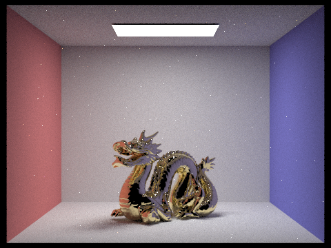
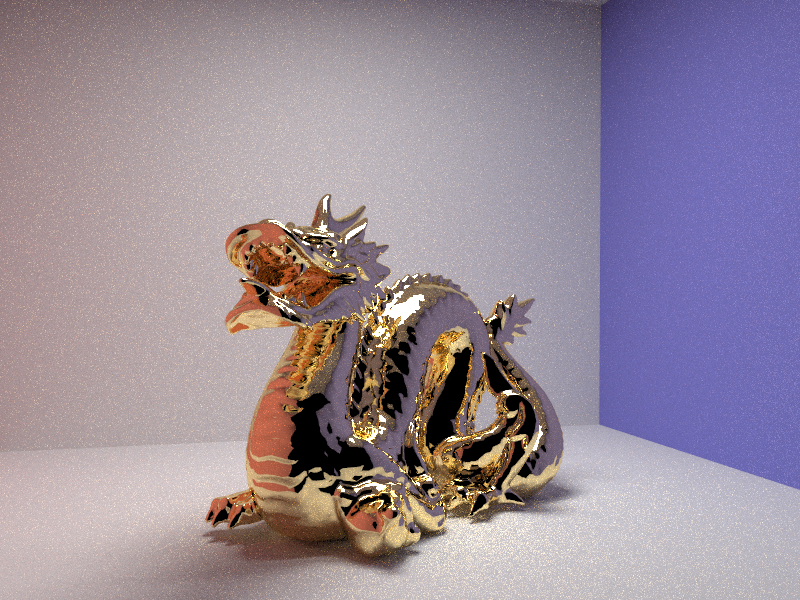

CS 284A: Computer Graphics and Imaging, Spring 2018
Assignment 3: PathTracer
Gauthier Dieppedalle, CS199-btx
Overview
In this project, I added more ray tracing features to project 3-1. I first developed some bsdf for more complicated materials: mirror, glass, and microfacet materials. I then supported environment light and depth of field. I lastly implemented some shaders in Node.js.
Part 1: Mirror and Glass Materials
The following images are rendered at 64 samples per pixel and 4 samples per light:
dae/sky/CBspheres.dae rendered in 2.3035s for 0 bounces.
|
dae/sky/CBspheres.dae rendered in 18.7675s for 1 bounce.
|
dae/sky/CBspheres.dae rendered in 45.1851s for 2 bounces.
|
dae/sky/CBspheres.dae rendered in 65.3517s for 3 bounces.
|

dae/sky/CBspheres.dae rendered in 82.1884s for 4 bounces.
|
dae/sky/CBspheres.dae rendered in 87.2691s for 5 bounces.
|
dae/sky/CBspheres.dae rendered in 142.4185s for 100 bounces.
|
We can see that in the zero bounce case, we can only see the light reflection from the source and the rest of the scene is all black. In the one bounce case, we can see that the light is simply going to each object and bouncing to the user eye. We can only see the color of the walls and floor. In the 2 bounce case, we can see that all objects are visible but there is no refraction (the light on the mirror ball is simply bouncing once to show the color of the direct bounce, the glass ball has no refraction so the light is not bouncing inside and is therefore all black). In the 3 bounce case, we can see that we now have reflected light and can see the colors of the glass ball. In the 4 bounces case we can see that the light under the glass ball is getting reflected at it's exit in the bottom of the ball to the floor. As a result, there is a white patch under the white ball. In the 5 bounces cases the light from the glass ball is getting reflected to the blue wall and we can see a small light patch on the right of the image. In the 100 bounces image we can see that the image is almost the same as the 5 bounces cases. There is slightly more light on the reflection of the light on the glass ball.
Part 2: Microfacet Material
I then rendered a sequence of 4 images of scene CBdragon_microfacet_au.dae rendered with $\alpha$ set to 0.005, 0.05, 0.25 and 0.5. The following images are rendered at using 128 samples per pixel, 1 samples per light, and a maximum number of bounces of 5:
dae/sky/CBdragon_microfacet_au.dae rendered in 94.9465s using $\alpha=0.5$.
|
dae/sky/CBdragon_microfacet_au.dae rendered in 94.1156s using $\alpha=0.25$.
|
dae/sky/CBdragon_microfacet_au.dae rendered in 98.6982s using $\alpha=0.05$.
|

dae/sky/CBdragon_microfacet_au.dae rendered in 95.1815s using $\alpha=0.005$.
|
According to the instructions, $\alpha$ represents the roughness of the macro surface. When the $\alpha$ is low at 0.005, the dragon is very dark and shiny. As the $\alpha$ becomes larger such at 0.05, the image dragon gets slighlty rougher and lighter. At $\alpha=0.25$, the dragon is again a bit more rough and has more of a golden color. At $\alpha=0.5$, the dragon is golden and seems to be very rough.
The following are two images of dae/sky/CBbunny_microfacet_cu.dae with 64 samples per pixel, 1 samples per light, and a maximum number of bounces of 5:
dae/sky/CBbunny_microfacet_cu.dae rendered using cosine hemisphere sampling.
|
dae/sky/CBbunny_microfacet_cu.dae rendered using importance sampling.
|
We can see that by using cosine hemisphere sampling the image has more noise and the bunny is darker then when using importance sampling.
I decided to render a nickel (Ni) dragon. To obtain the eta and k values I used the website given in the instruction. I entered the 3 different wavelengths for RGB colors and obtained the following values:
eta
- Red (wavelength = 650nm): 1.9900
- Blue (wavelength = 473nm): 1.7832
- Green (wavelength = 532nm): 1.8775
k
- Red (wavelength = 650nm): 4.2086
- Blue (wavelength = 473nm): 3.1028
- Green (wavelength = 532nm): 3.4946
alpha=0.5
The image obtained is the following using 128 samples per pixel, 1 samples per light, and a maximum number of bounces of 5:
dae/sky/CBdragon_microfacet_au.dae rendered using Nickel (Ni) microfacet.
|
Part 3: Environment Light
I then generated the probability_debug.png file for the field.exr file using the save_probability_debug() helper function after initializing my probability distributions:

probability_debug.png of exr/field.exr.
|
I then used the bunny_unlit.dae scene and the field.exr file and rendered two pictures, one with uniform sampling and one with importance sampling. I used 4 samples per pixel and 64 samples per light in each. I also set the maximum number of bounces to 5.
bunny_unlit.dae scene with field.exr using uniform sampling.
|
bunny_unlit.dae scene with field.exr using importance sampling.
|
We can see that by using uniform sampling the image of the unlit bunny is slightly more noisy when using uniform sampling compared to importance sampling. In uniform sampling I am simply generating a random direction on the sphere and then look up the radiance value in the texture map using bilinear interpolation. In importance sampling, we are biasing the selection of sampled direction for which incoming radiance is large as we are making the assumption that most of the energy by an environment light is concentrated in the region towards bright light source. Importance sampling will therefore reduce noise for environment lights with large variations in incoming light intensities as we are optimizing our sampling technique to sample towards the areas that requires more samples.
I then used the bunny_microfacet_cu_unlit.dae and the field.exr file and rendered two pictures, one with uniform sampling and one with importance sampling. I used 4 samples per pixel and 64 samples per light in each:
bunny_microfacet_cu_unlit.dae scene with field.exr using uniform sampling.
|
bunny_microfacet_cu_unlit.dae scene with field.exr using importance sampling.
|
Using uniform sampling the image of the bunny seems to be slightly more noisy when using uniform sampling compared to importance sampling.
Part 4: Depth of Field
I generated a "focus stack" where I focused at 4 visibly different depths through a scene using 64 samples per pixel, 4 samples per light, and a maximum number of bounces of 8 (the lensRadius is fixed to 0.0883883):
CBdragon.dae scene with focalDistance = 1.5
|
CBdragon.dae scene with focalDistance = 1.7
|
CBdragon.dae scene with focalDistance = 2.0
|
CBdragon.dae scene with focalDistance = 2.5
|
Here is a sequence of 4 pictures with visibly different aperture sizes, all focused at the same point in a scene using 64 samples per pixel, 4 samples per light, and a maximum number of bounces of 8 (the focal distance is fixed to 1.7):

CBdragon.dae scene with lensRadius = 0.0
|
CBdragon.dae scene with lensRadius = 0.0883883
|
CBdragon.dae scene with lensRadius = 0.3
|
CBdragon.dae scene with lensRadius = 0.6
|
Part 5: Shaders
Link to my gl directory!
In this part I implemented some custom shaders using GLSL. A shader program is an efficient algorithm often run on the GPU to render parts of the graphics pipeline. The position and color of each vertex or pixel on the screen can be edited in a shader program on the fly to render an image. Shaders can be coded in GLSL (which is very similar to C).
In this part I coded vertex shaders and fragment shaders. A vertex shader specifies the position and normal vector of each vertices in the scene. It can apply some transformations to these vertices but then needs to specify the final position in gl_Position. A fragment shader is the piece of program that is responsible for coloring the fragments generated during rasterization (in other words given by the vertex shader). In other words, a fragment shader can make a texture lookup to get the surface material for each fragment (also called geometric attributes) in the scene. The colors are specified in the gl_FragColor variable.
The Blinn-Phong shading model is a shading model made out of three different components: an ambient term, a diffuse term, and a specular term. By weighting all of these terms, the shading model can create a material made with these characteristics. The reflected ambient light of a Blinn-Phong model can be calculated as followed:
\[
\begin{align}
L&=L_a+L_d+L_s\\
&=k_aI_a+k_d\frac{I}{r^2}max(0, n \cdot l)+k_s\frac{I}{r^2}max(0, n \cdot h)^p
\end{align}
\]
$k_a$, $k_d$, $k_s$, $I_a$, $p$ are all paramaters that can be changed to weight the ambient light component, specular reflection component, and the diffuse lighting.
The following are screenshots of my Blinn-Phong shader outputting only the ambient component, a screen shot only outputting the diffuse component, a screen shot only outputting the specular component, and one using the entire Blinn-Phong model:
|
Blinn-Phong shader outputting only the ambient.
|
Blinn-Phong shader outputting only the diffuse.
|
 Blinn-Phong shader outputting only the specular.
Blinn-Phong shader outputting only the specular.
|
 Blinn-Phong shader outputting all 3 components.
Blinn-Phong shader outputting all 3 components.
|
The following is a screenshot of my texture mapping shader using my own custom texture by modifying src/renderers/t3-renderer
:
The following are screenshots representing my bump mapping shader and my displacement mapping shader:
|
Bump Mapping.
|
 Displacement Mapping.
Displacement Mapping.
|
In bump mapping I am only modifying the normal vector of each vertex so that the fragment shader gives the impression that there are bumps (even if the position of each vertices is the same). To compute the local normal vector, I look at the change in $u$ and $v$ for each fragment in the scene. A height map is used to comute the height of a given texture coordinate $u$ and $v$. In my case I used the red color of my texture as the function returning the height map. So the red parts of my texture will affect how the normal vectors will be.
In the displacement mapping, I am modifying the position of each vertex according to a height map. Therefore in displacement mapping I am both modifying the normal vectors of each fragment and the position of each fragment.
From the 4 images above, we can see that the bump mapping gives the illusion that there are bumps on the object. The displacement mapping has bumps that are much more apparent as the position of the vertices are actually changed (not only the normals).
By modifying the number of vertical and horizontal components in t4-1-renderer.js and t4-2-renderer.js we can see that decreasing the number of vertical components produces a texture image that is more blurry in the vertical direction (as there are less samples in the vertical direction). Increasing the number of vertical components makes the displacement slightly more detailed in the vertical direction. Similarly decreasing the number of horizontal components produces a much less detailed image in the horizontal direction. Increasing the number of components in the horizontal direction makes the texture image slightly more detailed in the horizontal direction. Changing the vertical and horizontal components changes both the texture and as a result the normal (and position of vertices for displacement).
These are screenshots of my experiements of changing the horizontal and vertical component:
|
Bump mapping horizontal component of 50.
|
Bump mapping horizontal component of 1000.
|
|
Bump mapping vertical component of 50.
|
Bump mapping vertical component of 1000.
|
|
Displacement mapping horizontal component of 50.
|
Displacement mapping horizontal component of 1000.
|
|
Displacement mapping vertical component of 50.
|
Displacement mapping vertical component of 1000.
|
We can see that in bump mapping increasing and decreasing the horizontal and vertical component seems to be making a larger difference in the change of height of the bumps compared to displacement mapping. This may be due to the fact that in bump mapping only the normals are changed and as a result making a small change makes a big difference. In displacment mapping there is always the position of vertices and normals that are contributing and as a result the sphere will have some slight bumps that are more apparent even when the number of components is small. Thefore, for a small horizontal component the bump mapping will have a lot less depth than in displacement mapping. To summarize, changing the vertical and horizontal component creates the illusion of a greater change of depth for bump mapping compared to displacement mapping.
In my custom shader, I decided to map a cube map to a sphere:
 Texture Mapping shader.
Texture Mapping shader.
|
I simply created a cube texture using THREE.CubeTextureLoader(), I then loaded the cube texture given in the textures folder. I then used textureCube to map the texture to my sphere in the frag file. The vert file is the same as the one from the texture mapping shader.